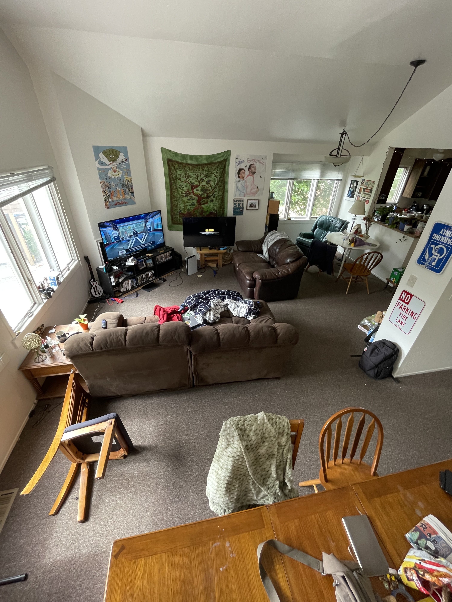

My wow factor is that this is a model of my living room. I replicated the most iconic furniture in here the best I could with free glb models I found.
There are 3 primary objects floating at the top and the rest 20 are cubes above the dining table.
